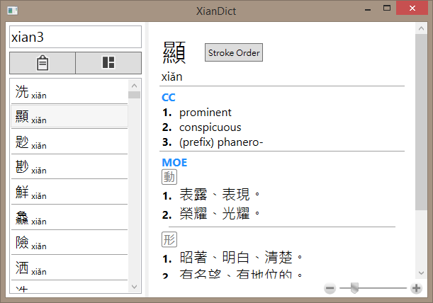
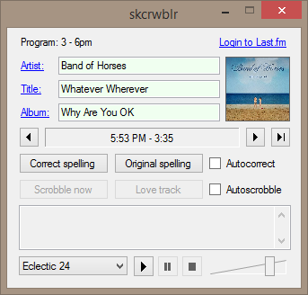

GitHub: https://github.com/bmn28
XianDict is a Chinese dictionary application I wrote in C# using WPF. It imports data from two dictionaries: CC-CEDICT, a CC-BY-SA-3.0 licensed Chinese-English dictionary, and 重編國語辭典修訂本, a CC-BY-ND-3.0 licensed Chinese-Chinese dictionary created by the Ministry of Education of the Republic of China and converted into JSON format by g0v for the 萌典 project.
XianDict allows flexible word lookup using characters (traditional or simplified) or combinations of pinyin, tones, and wildcards. For example, the query ma3*ya (the syllable mǎ, then zero or more characters, then any syllable starting in "ya") will match 馬雅, 瑪麗亞, and 馬來西亞. Characters can also be looked up by radical.
Dictionary entries are displayed as WPF FlowDocuments. If a word within the entry is selected, this word is also looked up and displayed as a popup window. There is also a clipboard viewer, which displays the current contents of the Windows clipboard and also allows selecting words to look them up in a popup window. This is useful for looking up unknown words while reading texts.
XianDict displays character stroke orders with animations implemented in WPF.
XianDict requires the .NET Framework 4.5.2. Download XianDict.zip, extract to a folder, and run XianDict.exe. On first run, the program will take a short while to prepare the database. The source code is available on GitHub.
skcrwblr is a WinForms application for streaming the KCRW radio station, both its main broadcast and its 24/7 music station. Using a JSON tracklist periodically pulled from the station's website, it displays the currently playing song (as well as the artist and album) and the previously played songs. Using the Last.fm API, it displays album art and corrects spelling errors that may occur in the tracklist. The user can also log in with a Last.fm account in order to log ("scrobble") songs that are played and mark them as "loved".
Streaming MP3 playback is implemented using the NAudio library.
skcrwblr requires the .NET Framework 4.5.1. Download skcrwblr_v0.5.zip, extract to a folder, and run skcrwblr.exe. The source code is available on GitHub.
Manumaker is a web application that generates manuscript paper (music paper) templates. The user can customize the manuscript paper to specified paper and staff dimensions, then download it in PDF format.
Manumaker was written in Python and uses Flask and the PyX graphics library.